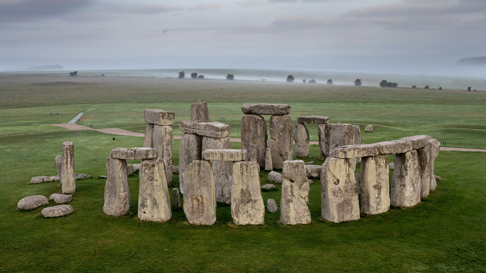

על המקוםסטונהנג' הוא מונומנט פרהיסטורי השוכן במישור סולסברי שבמחוז וילטשייר באנגליה, כ-8 קילומטרים צפונית לעיר סולסברי. סטונהנג' הוא אחד מהאתרים הפרהיסטוריים המפורסמים בעולם, והוא מורכב מתעלה מעגלית רדודה שעל גדתה הפנימית בנויה סוללת עפר המקיפה מעגל גדול של אבנים עומדות שבמרכזו חמישה טריליתונים בצורת פרסה. הארכאולוגים סוברים שהאבנים העומדות הוצבו במאה ה-22 לפנה"ס, והסוללה המקיפה אותם ביחד עם התעלה, המרכיבים את החלק הקדום ביותר של המונומנט, מתוארכים למאה ה-31 לפנה"ס. האתר והאזור הקרוב אליו הוספו לרשימת אתרי המורשת העולמית של אונסק"ו ב-1986 ביחד עם האתרים סביב אייווברי בשם סטונהנג', אייווברי ואתרים נלווים, ולמקום מעמד של אתר ארכאולוגי מוגן לפי החוק הבריטי. סטונהנג' עצמו שייך לכתר הבריטי ומנוהל על ידי קרן המורשת האנגלית (גוף בתוך מחלקת התרבות, התקשורת והספורט של ממשלת בריטניה), ואילו האזור המקיף את סטונהנג' מנוהל על ידי הקרן הלאומית. |

 |